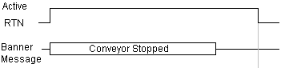
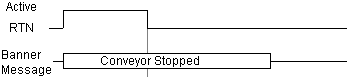
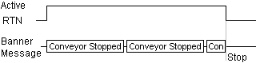
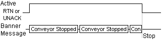
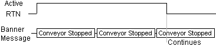
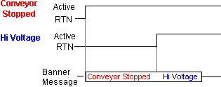
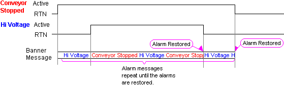
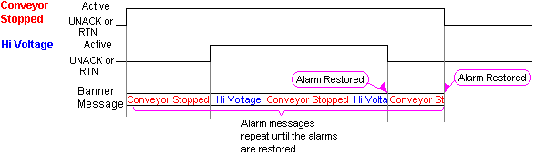
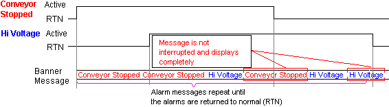

|
|
|
|
|
|
|
|
There are three ways to stop displaying banner alarm messages: Only Once, Stop when RTN, Stop when UNACK or RTN, Scroll to end when RTN.
|
Only Once |
When the alarm becomes active, the alarm message scrolls across the Alarm Banner once.  Even if the alarm returns to normal (RTN) while the alarm message is displaying, the alarm message continues to scroll until it goes out of view.  |
|
Stop when RTN |
While an alarm is active or in the UNACK state, the alarm message scrolls repeatedly across the alarm banner. Once the alarm returns to normal (RTN), the alarm message will stop, even in the middle of the message.  |
|
Stop when UNACK or RTN |
While an alarm is active, the alarm message scrolls repeatedly across the alarm banner. If the alarm is not acknowledged (UNACK) or Return to Normal (RTN), the alarm message will stop, even in the middle of the message.  |
|
Scroll to end when RTN |
While an alarm is active or in the UNACK state, the alarm message scrolls repeatedly across the alarm banner. If the alarm returns to normal (RTN), the alarm message continues to scroll until it goes out of view.  |
The following diagrams explain what happens when multiple alarms are active. As an example, there are two alarms with the same priority: Conveyor Stopped and High Voltage.
Only Once
When activated, alarm messages display once in the order of their occurrence. The Conveyor Stopped message and the Hi Voltage messages will display simultaneously.

Stop when RTN
Active and UNACK alarm messages repeatedly display until their alarms return to normal (RTN). If an alarm message returns to normal (RTN) while it is scrolling across the Alarm Banner, the alarm message stops displaying. Alarm messages with the same priority appear in the order of their occurrence.

Stop when UNACK or RTN
Active alarm messages repeatedly display until their alarms go into the UNACK or RTN state. If an alarm message is not acknowledged (UNACK) or returns to normal (RTN) while it is scrolling across the Alarm Banner, the alarm message stops displaying. Alarm messages appear in the order of their occurrence.

Scroll to end when RTN
Active and UNACK alarm messages repeatedly display until their alarms returns to normal (RTN). If an alarm message returns to normal (RTN) while it is scrolling across the Alarm Banner, the alarm message displays fully before stopping its display. Alarm messages appear in the order of their occurrence.
